Overview
The above model is trained on the PASCAL VOC 2007 image dataset with training labels for 20 common object classes, the network architecture is a RESNET-34, with custom head. The loss function uses an L1-loss for the bounding boxes and cross entropy loss for the classification. The deeplearning framework being used is PyTorch.
{kind=link}
The Dataset
PASCAL can be considered as a good entry level dataset to get started with training models to do basic vision related tasks like image classification, object detection and image segmentation. It provides us with 5011 images as the train/val set, over 20 object categories and also contains the labeled annotations for each image, like object categories and their bounding boxes. We shall use them to train our model to output the bounding box values and the category of the largest object in the image. 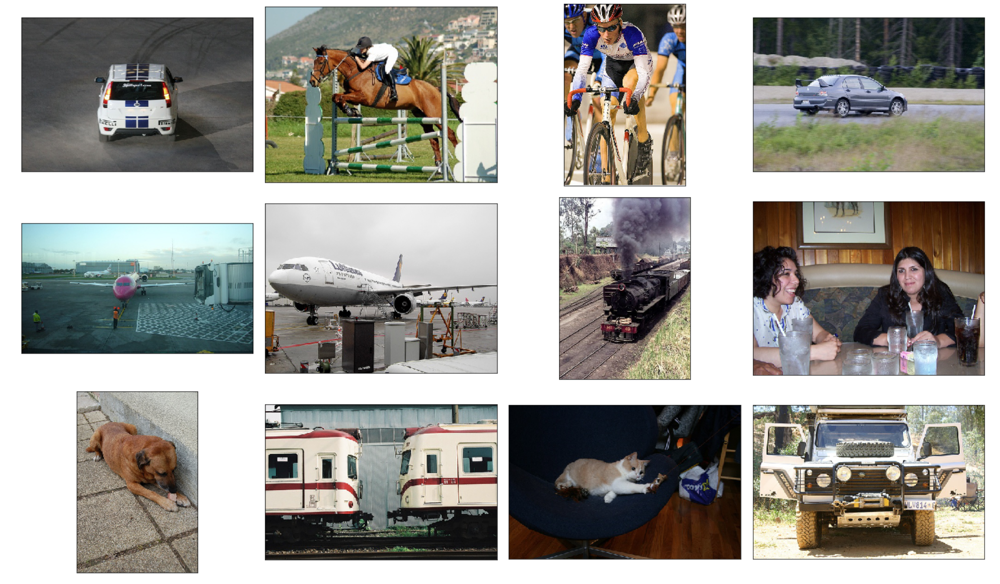 Sample images from the dataset
Data pre-processing
Next step is to prepare the data for the training process, we need to be able to map the images(X) to their expected output/ ground truth values(y). For this we use Pandas to create a DataFrame and save it as a csv file for our convenient reference.
The bounding box annotations in the dataset are denoted using the Top Left Corner(x,y), w, h. We convert it to Top Left(x, y) and Bottom Right (x', y'), so as to emphasize the network to get smaller boxes precise too.
-
Image Transforms
Inorder to make the model robust to small changes in the image and predict better on the test set, we introduce transforms. We augment the dataset by introducing RandomHorizontalFlip, RandomRotate and ColorJitter to the images. We handle the changes to dependent variable y, bounding box values as per the transform.
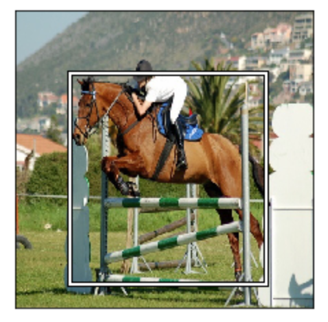 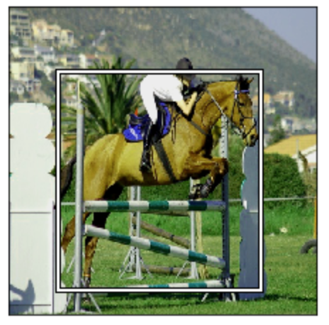 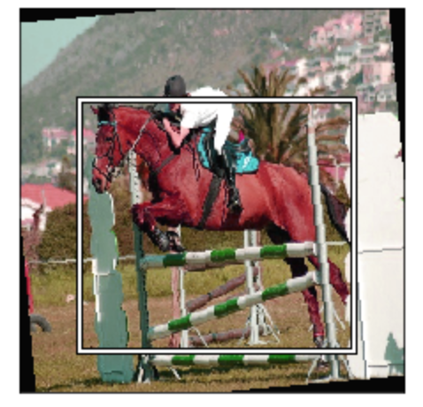 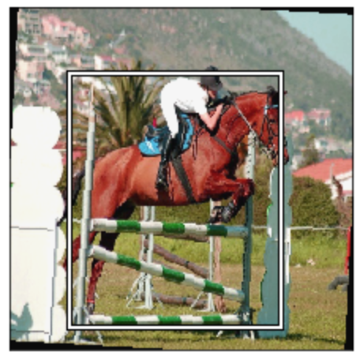Image transforms: flipping, color jitter and rotationFinally we convert the image to a 3D tensor with values scaled between (0-1) for better training and for the framework to manipulate it efficiently.
-
Dataset and DataLoader
In short the Dataset is a class that helps us make the raw dataset iteratable.
It implements the __getitem__(), __len__() methods to access the dataset like an array, encapsulates image transforms and returns a tuple of (transformed_image_tensor, label_tensor).
sample class can be found here.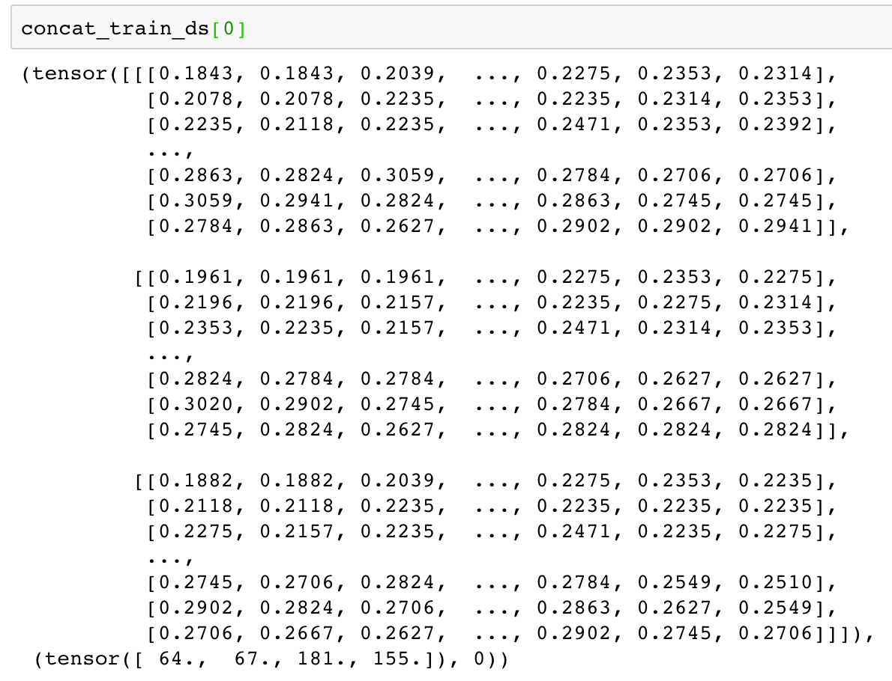 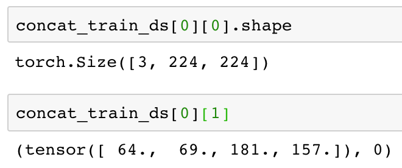Dataset: returns transformed image tensor and label(bbox_tensor, category_id)
The DataLoader is a class that helps us create mini-batches and shuffles the data. It is a generator and returns one mini-batch at a time.
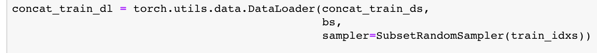DataLoader
The Neural Network
The model used here is the RESNET-34 version, pre-trained on ImageNet. The last 2 layers, average-pooling (avg-pool) and fully connected (fc-1000) have been removed and new layers have been added.
{kind=link}
In the end we output 20+4 numbers. One for the scores of each class, 4 for the bounding box (top-left corner (x,y) and bottom-right corner (x',y')).
Custom Loss Function
Since we are performing two tasks here, i.e. classification of the object and regression of its bounding box values. Therefore we have a combined loss function of cross-entropy loss and L1-loss.
-
Cross entropy loss
Since the task is to classify, we would want to interpret our output scores as probabilities for object to belong to that class. We do that by using Softmax function,
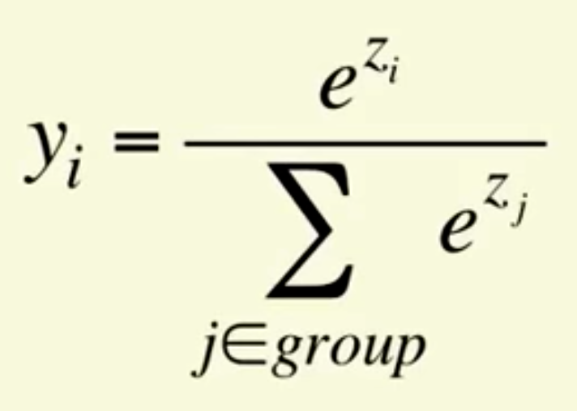SoftmaxEx: for 3 classes, 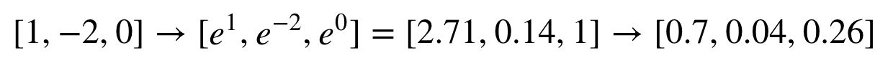Next to calculate loss, if we use sum of squared differences, issue is we get very small gradients when target value is 1 but our model output is far off at 0.000001.
To address this, a Cross Entropy loss is introduced, it is logarithmic based, minor improvement in values (0.000001 to 0.00001) provides good gradients (-log(0.000001)=6, -log(0.00001)=5).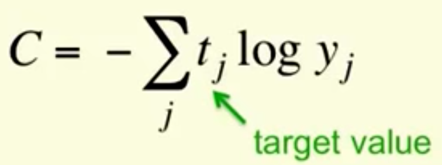 Cross entropy lossFrom our Ex case, if 2 was the target class, loss = -[0*log(0.7) + 1*log(0.04) + 0*log(0.26)] = 1.398
-
L1 Loss
Usually for regression tasks, a common way to specify penalty is by the difference in values.
|(y-y')| or also, (y-y')^2. Where, y' being predicted, y being the expected value.Mathematically they are called L1-norm and squared L2-norm respectively for vectors y and y'
The general representation of norm being,
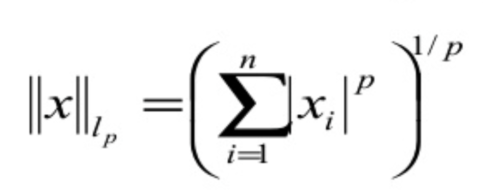The p-norm of a vectorWe will be using the L1-norm.
In order for the network to weigh both tasks equally, we balance the scales, 25 was found to be a suitable multiplier after looking at sample outputs.
Training
Finally with all things in place, the DataLoader, Model and Loss Function,
we choose an Optimizer for the gradient update strategy and then we train !
We pick Adam as our optimizer to update our model weights in order to minimize the overall loss. Adam has been found in general to perform well for our set of tasks.
Plot results on test set
We test our model on sample images from the validation/test set and visualize the final results.

The Jupyter notebook for this post can be found here.